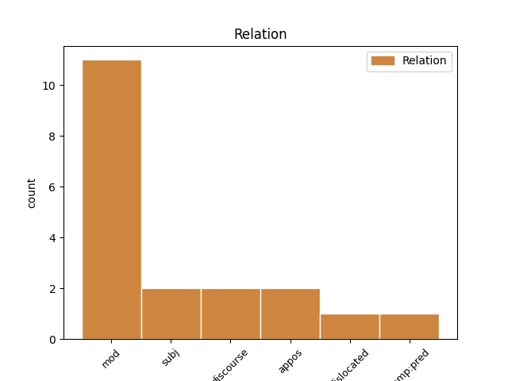
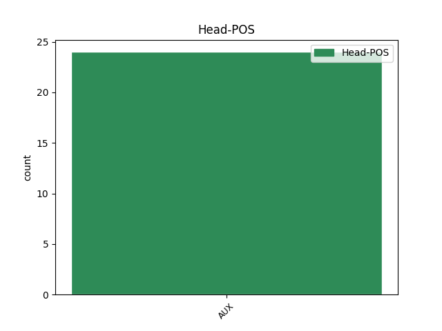
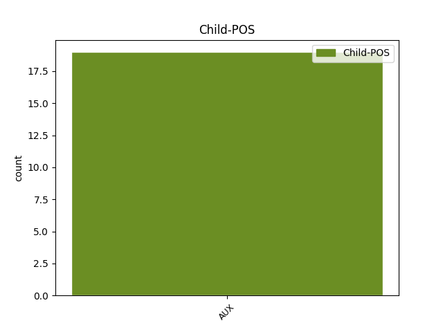

Distribution of features within this leaf



Agreement Rules sorted by frequency.
- When the dependent token is the subject(subj) of the head token, and the head token is AUX
1 Իսկ _ _ _ _ 0 _ _ _
2 ով _ _ _ _ 0 _ _ _
3 այդ _ _ _ _ 0 _ _ _
4 կապն _ _ _ _ 0 _ _ _
5 ունակություն _ _ _ _ 0 _ _ _
6 չունի ունեմ VERB _ Aspect=Imp|Mood=Ind|Number=Sing|Person=3|Polarity=Neg|Subcat=Tran|Tense=Pres|VerbForm=Fin|Voice=Act 10 subj _ LTranslit=ownem|Translit=čowni
7 տեսնելու _ _ _ _ 0 _ _ _
8 , _ _ _ _ 0 _ _ _
9 ուզում _ _ _ _ 0 _ _ _
10 է եմ AUX _ Aspect=Imp|Mood=Ind|Number=Sing|Person=3|Polarity=Pos|Tense=Pres|VerbForm=Fin 0 _ _ _
11 փոփոխություն _ _ _ _ 0 _ _ _
12 , _ _ _ _ 0 _ _ _
13 բայց _ _ _ _ 0 _ _ _
14 չի _ _ _ _ 0 _ _ _
15 գիտակցում _ _ _ _ 0 _ _ _
16 , _ _ _ _ 0 _ _ _
17 որ _ _ _ _ 0 _ _ _
18 ինքը _ _ _ _ 0 _ _ _
19 գործ _ _ _ _ 0 _ _ _
20 ունի _ _ _ _ 0 _ _ _
21 անելու _ _ _ _ 0 _ _ _
22 , _ _ _ _ 0 _ _ _
23 որ _ _ _ _ 0 _ _ _
24 իր _ _ _ _ 0 _ _ _
25 ընտրությամբ _ _ _ _ 0 _ _ _
26 պատասխանատու _ _ _ _ 0 _ _ _
27 է _ _ _ _ 0 _ _ _
28 դրա _ _ _ _ 0 _ _ _
29 համար _ _ _ _ 0 _ _ _
30 : _ _ _ _ 0 _ _ _
Disagree Examples:
1 Բայց _ _ _ _ 0 _ _ _
2 նախքան _ _ _ _ 0 _ _ _
3 ճանապարհների _ _ _ _ 0 _ _ _
4 երկարության _ _ _ _ 0 _ _ _
5 ու _ _ _ _ 0 _ _ _
6 դժվարության _ _ _ _ 0 _ _ _
7 և _ _ _ _ 0 _ _ _
8 ընդհանրապես _ _ _ _ 0 _ _ _
9 ճանապարհների _ _ _ _ 0 _ _ _
10 մասին _ _ _ _ 0 _ _ _
11 մտածելը _ _ _ _ 0 _ _ _
12 , _ _ _ _ 0 _ _ _
13 նայում _ _ _ _ 0 _ _ _
14 էինք _ _ _ _ 0 _ _ _
15 մենք _ _ _ _ 0 _ _ _
16 նրանց _ _ _ _ 0 _ _ _
17 ու _ _ _ _ 0 _ _ _
18 թեև _ _ _ _ 0 _ _ _
19 երկուսից _ _ _ _ 0 _ _ _
20 միայն _ _ _ _ 0 _ _ _
21 մեկին _ _ _ _ 0 _ _ _
22 էինք _ _ _ _ 0 _ _ _
23 ճանաչում _ _ _ _ 0 _ _ _
24 ՝ _ _ _ _ 0 _ _ _
25 Մարտինին _ _ _ _ 0 _ _ _
26 , _ _ _ _ 0 _ _ _
27 իսկ _ _ _ _ 0 _ _ _
28 մյուսին _ _ _ _ 0 _ _ _
29 ՝ _ _ _ _ 0 _ _ _
30 կնոջը _ _ _ _ 0 _ _ _
31 , _ _ _ _ 0 _ _ _
32 տեսնում _ _ _ _ 0 _ _ _
33 էինք _ _ _ _ 0 _ _ _
34 առաջին _ _ _ _ 0 _ _ _
35 անգամ _ _ _ _ 0 _ _ _
36 , _ _ _ _ 0 _ _ _
37 վրան _ _ _ _ 0 _ _ _
38 էլ _ _ _ _ 0 _ _ _
39 ոտքից _ _ _ _ 0 _ _ _
40 գլուխ _ _ _ _ 0 _ _ _
41 գրված _ _ _ _ 0 _ _ _
42 էր _ _ _ _ 0 _ _ _
43 ՝ _ _ _ _ 0 _ _ _
44 այն _ _ _ _ 0 _ _ _
45 տեղերից _ _ _ _ 0 _ _ _
46 է _ _ _ _ 0 _ _ _
47 , _ _ _ _ 0 _ _ _
48 որտեղ _ _ _ _ 0 _ _ _
49 5-րդ _ _ _ _ 0 _ _ _
50 փողոցի _ _ _ _ 0 _ _ _
51 անունն _ _ _ _ 0 _ _ _
52 անգամ _ _ _ _ 0 _ _ _
53 չպիտի _ _ _ _ 0 _ _ _
54 լսած _ _ _ _ 0 _ _ _
55 լինեն _ _ _ _ 0 _ _ _
56 , _ _ _ _ 0 _ _ _
57 մենք _ _ _ _ 0 _ _ _
58 նայում _ _ _ _ 0 _ _ _
59 էինք _ _ _ _ 0 _ _ _
60 մեզ _ _ _ _ 0 _ _ _
61 քաջ _ _ _ _ 0 _ _ _
62 ծանոթ _ _ _ _ 0 _ _ _
63 Մարտին _ _ _ _ 0 _ _ _
64 Սահակյանին _ _ _ _ 0 _ _ _
65 ու _ _ _ _ 0 _ _ _
66 թվում _ _ _ _ 0 _ _ _
67 էր եմ AUX _ Aspect=Imp|Mood=Ind|Number=Sing|Person=3|Polarity=Pos|Tense=Imp|VerbForm=Fin 0 _ _ _
68 , _ _ _ _ 0 _ _ _
69 նրան _ _ _ _ 0 _ _ _
70 առաջին _ _ _ _ 0 _ _ _
71 անգամ _ _ _ _ 0 _ _ _
72 ենք եմ AUX _ Aspect=Imp|Mood=Ind|Number=Plur|Person=3|Polarity=Pos|Tense=Pres|VerbForm=Fin 67 subj _ LTranslit=em|Translit=enk’
73 տեսնում _ _ _ _ 0 _ _ _
74 , _ _ _ _ 0 _ _ _
75 նայում _ _ _ _ 0 _ _ _
76 էինք _ _ _ _ 0 _ _ _
77 այդ _ _ _ _ 0 _ _ _
78 անծանոթ _ _ _ _ 0 _ _ _
79 կնոջը _ _ _ _ 0 _ _ _
80 ու _ _ _ _ 0 _ _ _
81 թվում _ _ _ _ 0 _ _ _
82 էր _ _ _ _ 0 _ _ _
83 , _ _ _ _ 0 _ _ _
84 լավ _ _ _ _ 0 _ _ _
85 գիտենք _ _ _ _ 0 _ _ _
86 նրան _ _ _ _ 0 _ _ _
87 , _ _ _ _ 0 _ _ _
88 նա _ _ _ _ 0 _ _ _
89 էլ _ _ _ _ 0 _ _ _
90 մեր _ _ _ _ 0 _ _ _
91 փողոցի _ _ _ _ 0 _ _ _
92 մասին _ _ _ _ 0 _ _ _
93 մտածելուց _ _ _ _ 0 _ _ _
94 բացի _ _ _ _ 0 _ _ _
95 , _ _ _ _ 0 _ _ _
96 այլ _ _ _ _ 0 _ _ _
97 բան _ _ _ _ 0 _ _ _
98 չի _ _ _ _ 0 _ _ _
99 արել _ _ _ _ 0 _ _ _
100 կյանքում _ _ _ _ 0 _ _ _
101 ։ _ _ _ _ 0 _ _ _
1 Բայց _ _ _ _ 0 _ _ _
2 նախքան _ _ _ _ 0 _ _ _
3 ճանապարհների _ _ _ _ 0 _ _ _
4 երկարության _ _ _ _ 0 _ _ _
5 ու _ _ _ _ 0 _ _ _
6 դժվարության _ _ _ _ 0 _ _ _
7 և _ _ _ _ 0 _ _ _
8 ընդհանրապես _ _ _ _ 0 _ _ _
9 ճանապարհների _ _ _ _ 0 _ _ _
10 մասին _ _ _ _ 0 _ _ _
11 մտածելը _ _ _ _ 0 _ _ _
12 , _ _ _ _ 0 _ _ _
13 նայում _ _ _ _ 0 _ _ _
14 էինք _ _ _ _ 0 _ _ _
15 մենք _ _ _ _ 0 _ _ _
16 նրանց _ _ _ _ 0 _ _ _
17 ու _ _ _ _ 0 _ _ _
18 թեև _ _ _ _ 0 _ _ _
19 երկուսից _ _ _ _ 0 _ _ _
20 միայն _ _ _ _ 0 _ _ _
21 մեկին _ _ _ _ 0 _ _ _
22 էինք _ _ _ _ 0 _ _ _
23 ճանաչում _ _ _ _ 0 _ _ _
24 ՝ _ _ _ _ 0 _ _ _
25 Մարտինին _ _ _ _ 0 _ _ _
26 , _ _ _ _ 0 _ _ _
27 իսկ _ _ _ _ 0 _ _ _
28 մյուսին _ _ _ _ 0 _ _ _
29 ՝ _ _ _ _ 0 _ _ _
30 կնոջը _ _ _ _ 0 _ _ _
31 , _ _ _ _ 0 _ _ _
32 տեսնում _ _ _ _ 0 _ _ _
33 էինք _ _ _ _ 0 _ _ _
34 առաջին _ _ _ _ 0 _ _ _
35 անգամ _ _ _ _ 0 _ _ _
36 , _ _ _ _ 0 _ _ _
37 վրան _ _ _ _ 0 _ _ _
38 էլ _ _ _ _ 0 _ _ _
39 ոտքից _ _ _ _ 0 _ _ _
40 գլուխ _ _ _ _ 0 _ _ _
41 գրված _ _ _ _ 0 _ _ _
42 էր _ _ _ _ 0 _ _ _
43 ՝ _ _ _ _ 0 _ _ _
44 այն _ _ _ _ 0 _ _ _
45 տեղերից _ _ _ _ 0 _ _ _
46 է _ _ _ _ 0 _ _ _
47 , _ _ _ _ 0 _ _ _
48 որտեղ _ _ _ _ 0 _ _ _
49 5-րդ _ _ _ _ 0 _ _ _
50 փողոցի _ _ _ _ 0 _ _ _
51 անունն _ _ _ _ 0 _ _ _
52 անգամ _ _ _ _ 0 _ _ _
53 չպիտի _ _ _ _ 0 _ _ _
54 լսած _ _ _ _ 0 _ _ _
55 լինեն _ _ _ _ 0 _ _ _
56 , _ _ _ _ 0 _ _ _
57 մենք _ _ _ _ 0 _ _ _
58 նայում _ _ _ _ 0 _ _ _
59 էինք _ _ _ _ 0 _ _ _
60 մեզ _ _ _ _ 0 _ _ _
61 քաջ _ _ _ _ 0 _ _ _
62 ծանոթ _ _ _ _ 0 _ _ _
63 Մարտին _ _ _ _ 0 _ _ _
64 Սահակյանին _ _ _ _ 0 _ _ _
65 ու _ _ _ _ 0 _ _ _
66 թվում _ _ _ _ 0 _ _ _
67 էր _ _ _ _ 0 _ _ _
68 , _ _ _ _ 0 _ _ _
69 նրան _ _ _ _ 0 _ _ _
70 առաջին _ _ _ _ 0 _ _ _
71 անգամ _ _ _ _ 0 _ _ _
72 ենք _ _ _ _ 0 _ _ _
73 տեսնում _ _ _ _ 0 _ _ _
74 , _ _ _ _ 0 _ _ _
75 նայում _ _ _ _ 0 _ _ _
76 էինք _ _ _ _ 0 _ _ _
77 այդ _ _ _ _ 0 _ _ _
78 անծանոթ _ _ _ _ 0 _ _ _
79 կնոջը _ _ _ _ 0 _ _ _
80 ու _ _ _ _ 0 _ _ _
81 թվում _ _ _ _ 0 _ _ _
82 էր եմ AUX _ Aspect=Imp|Mood=Ind|Number=Sing|Person=3|Polarity=Pos|Tense=Imp|VerbForm=Fin 0 _ _ _
83 , _ _ _ _ 0 _ _ _
84 լավ _ _ _ _ 0 _ _ _
85 գիտենք գիտել VERB _ Aspect=Imp|Mood=Ind|Number=Plur|Person=1|Polarity=Pos|Subcat=Tran|Tense=Pres|VerbForm=Fin|Voice=Act 82 subj _ LTranslit=gitel|Translit=gitenk’
86 նրան _ _ _ _ 0 _ _ _
87 , _ _ _ _ 0 _ _ _
88 նա _ _ _ _ 0 _ _ _
89 էլ _ _ _ _ 0 _ _ _
90 մեր _ _ _ _ 0 _ _ _
91 փողոցի _ _ _ _ 0 _ _ _
92 մասին _ _ _ _ 0 _ _ _
93 մտածելուց _ _ _ _ 0 _ _ _
94 բացի _ _ _ _ 0 _ _ _
95 , _ _ _ _ 0 _ _ _
96 այլ _ _ _ _ 0 _ _ _
97 բան _ _ _ _ 0 _ _ _
98 չի _ _ _ _ 0 _ _ _
99 արել _ _ _ _ 0 _ _ _
100 կյանքում _ _ _ _ 0 _ _ _
101 ։ _ _ _ _ 0 _ _ _
1 Թվում _ _ _ _ 0 _ _ _
2 էր եմ AUX _ Aspect=Imp|Mood=Ind|Number=Sing|Person=3|Polarity=Pos|Tense=Imp|VerbForm=Fin 0 _ _ _
3 , _ _ _ _ 0 _ _ _
4 այդքան _ _ _ _ 0 _ _ _
5 երկար _ _ _ _ 0 _ _ _
6 ճանապարհ _ _ _ _ 0 _ _ _
7 , _ _ _ _ 0 _ _ _
8 այդքան _ _ _ _ 0 _ _ _
9 դժվար _ _ _ _ 0 _ _ _
10 ճանապարհ _ _ _ _ 0 _ _ _
11 հնարավոր _ _ _ _ 0 _ _ _
12 է եմ AUX _ Aspect=Imp|Mood=Ind|Number=Sing|Person=3|Polarity=Pos|Tense=Pres|VerbForm=Fin 2 subj _ LTranslit=em|Translit=ē
13 անցնել _ _ _ _ 0 _ _ _
14 միայն _ _ _ _ 0 _ _ _
15 այդ _ _ _ _ 0 _ _ _
16 կնոջ _ _ _ _ 0 _ _ _
17 ուղեկցությամբ _ _ _ _ 0 _ _ _
18 ։ _ _ _ _ 0 _ _ _